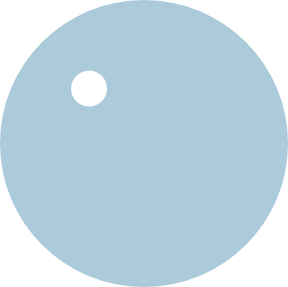
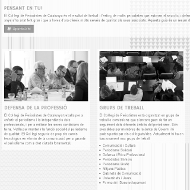
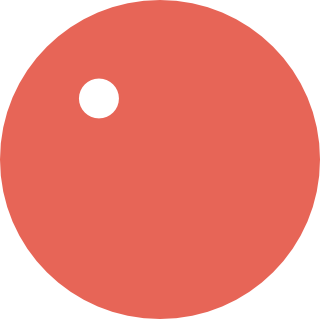

Des de Barcelona, 17 anys creant a Internet

Comunicació

Comunicació corporativa, estratègia, elaboració, publicació i posicionament de continguts a Internet per mitjà dels darrers estàndards de disseny i programació web.

Infraestructura
Estratègia, implementació i manteniment d'infraestructures, sistemes i serveis informàtics per mitjà dels darrers estàndards de virtualització al núvol.
T'ajudem? Estaríem encantats d'escoltar-te!
Oxygen cita
El control que els dissenyadors tenen al mitjà imprès, i que sovint desitgen al mitjà web, és simplement una funció de la limitació de la pàgina impresa. Hem d'acceptar el fet que el web no té les mateixes limitacions i dissenyar per a aquesta flexibilitat.